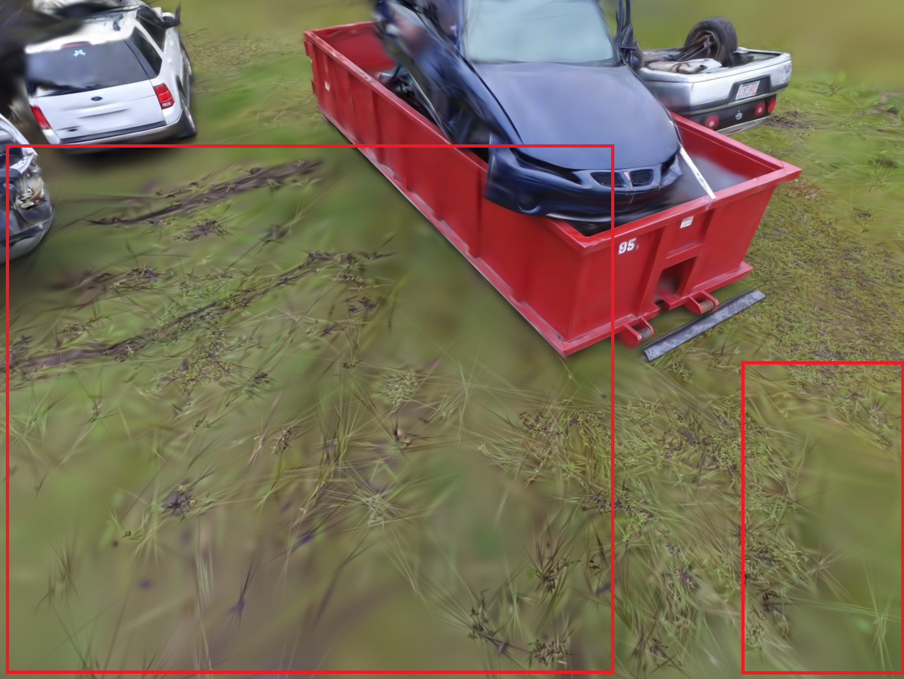
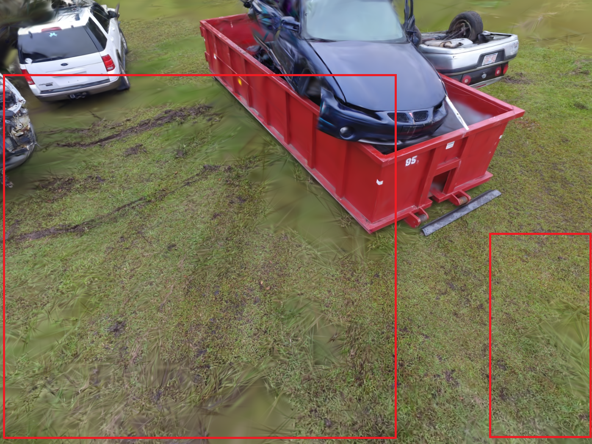
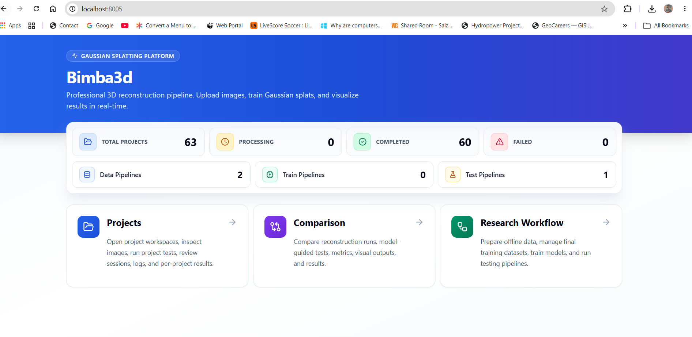

3D Gaussian Splatting (3DGS) can create photorealistic 3D scenes, but its result depends on the training settings. Drone projects differ in overlap, viewing angle, texture, vegetation, terrain, image detail, and flight pattern. Because of this, the same default hyperparameters may not work equally well for every reconstruction.
This thesis learns from previous drone-image reconstruction experiments to recommend better starting hyperparameters for new unseen projects. The goal is to reduce manual trial-and-error before training begins.
The figure shows the main idea of the research. Drone-image projects may look similar as input folders, but their project conditions can be very different. These conditions can affect 3DGS training behaviour and reconstruction quality.
ProblemDefault hyperparameters may not fit every drone-image project.
Research ideaLearn from previous reconstruction experiments.
Expected valueRecommend better starting hyperparameters for unseen projects.
Methodology Overview
The methodology follows four main steps: project preparation, training-data preparation, model training, and final testing.
First, drone-image projects are prepared for 3DGS. Images are resized, and SfM/COLMAP estimates camera poses and sparse scene structure. Project descriptors are also prepared to describe project conditions such as image detail, overlap, viewing geometry, texture, terrain, and vegetation.
Next, model-development projects are used to create training data. Each project is first reconstructed with default 3DGS settings as a baseline run. Controlled hyperparameter multiplier combinations are then applied to the default settings and reconstructed as exploration runs. The trained models use this information to recommend multipliers for separate unseen test projects.
The diagram gives a simple overview of the thesis workflow. It shows how drone-image projects are prepared, converted into training data, used for model training, and finally tested on unseen projects.
Training Data Preparation
The training data was built from completed 3DGS experiments on the model-development projects. Each usable exploration run was stored as one training row. This means the models learned from measured reconstruction results produced by real 3DGS runs.
A training row combines three parts: project descriptors, the tested multiplier combination, and the relative quality score. The descriptors describe the project, the multiplier shows which hyperparameter setting was tested, and the score shows whether that setting performed better or worse than the project baseline.
This structure allows the models to learn how project conditions relate to multiplier choices and reconstruction quality. The unseen test projects were kept separate and used only for final evaluation, so the final results could be checked on projects not used during training-data preparation.
Training data steps
baseline run
exploration runs
relative quality scoring
training row
Note: Each row represents one completed exploration run. The baseline run is used only to calculate the relative quality score, which summarizes whether the run improved or degraded quality compared with that project's baseline.
Project descriptorstested multiplierrelative quality scoreone training row
58drone-image projects46model-development projects12unseen test projects653usable training rows
Model Training and Testing
Two scoring models were developed and tested: Ridge Regression and a compact MLP. Their task was to score candidate hyperparameter multiplier combinations and predict which one may give better relative quality for a drone-image project.
Both models used the same 47-value input, built from project descriptors, multiplier values, squared multiplier values, and descriptor-multiplier interaction terms. Each model produced one predicted relative quality score for each candidate combination.
Ridge Regression was used as the main model because it is regularized and easier to interpret with a limited number of independent projects. The MLP was included as a nonlinear comparison model to test whether a small neural network could capture patterns that Ridge Regression may miss.
Ridge RegressionMain scoring model. It is simple, regularized, and more stable for a limited number of independent projects.MLPNonlinear comparison model. It uses the same 47-value input and a compact 47 -> 16 -> 1 structure.
Testing workflow
01Prepare test descriptors
The same descriptor preparation is applied to unseen projects.
02Generate candidates
Thirty candidate multiplier combinations are prepared for each test project.
03Score and select
Ridge and MLP score the candidates and select the highest-scoring setting.
04Run and compare
Selected multipliers are tested in 3DGS and compared with the baseline at 5,000 iterations.
Results
The final evaluation compared model-selected 3DGS runs with default baseline runs on unseen test projects at the fixed 5,000-iteration checkpoint. The comparison used PSNR, SSIM, and LPIPS as the main quality metrics, with runtime, Gaussian count, hard-cap behaviour, and visual inspection used as supporting evidence.
Both scoring models produced positive mean quality changes among normally completed runs. Ridge Regression was more reliable overall because it completed more projects normally and produced fewer hard-cap cases, while the MLP showed stronger mean improvements in some successful runs but less stable project-level behaviour.
Project-wise charts use project index numbers on the x-axis.
11/12completed normally8/11all three metrics improved
Ridge improvement summary; hard-cap cases are stopped runs shown separately.PSNR improvement = model-selected PSNR minus baseline PSNR at 5,000 iterations.SSIM improvement = model-selected SSIM minus baseline SSIM at 5,000 iterations.LPIPS improvement = baseline LPIPS minus model-selected LPIPS at 5,000 iterations.
10/12completed normally6/10all three metrics improved
MLP improvement summary; hard-cap cases are stopped runs shown separately.PSNR improvement = model-selected PSNR minus baseline PSNR at 5,000 iterations.SSIM improvement = model-selected SSIM minus baseline SSIM at 5,000 iterations.LPIPS improvement = baseline LPIPS minus model-selected LPIPS at 5,000 iterations.
Note: Hard cap or HC means that a run exceeded the 6,000,000-Gaussian safety limit set for this thesis to control memory use and runtime. These runs were stopped, so complete final metric values were not available.
Visual assessment
The swipe comparisons below show Ridge-selected examples: Pix4D Forensic had the strongest improvement (+1.116 dB PSNR, +0.151 SSIM, +0.235 LPIPS), while Thomas More Church had the weakest result (-0.364 dB PSNR, +0.003 SSIM, +0.002 LPIPS).


BaselineModel selected
Pix4D Forensic: strong improvement case with clearer ground texture in highlighted areas.
Note: The swipe maps and preview renders show checkpoint outputs used for this research comparison. The 3D Gaussian Splatting models were stopped at 5,000 or 7,000 training iterations for controlled evaluation, so longer training would generally be expected to improve visual completeness and rendering quality.
Outputs
The thesis produced four public-facing outputs: the open-source Bimba3D-re platform, an interactive results section, the thesis poster, and downloadable research materials. Together, these outputs present the research workflow, selected results, and practical implementation of the thesis.

Bimba3D-re platform
A local open-source platform for preparing drone-image projects, running 3DGS experiments, enriching training data, applying recommendation models, and comparing baseline and model-selected reconstructions.
The results show that information from previous drone-image 3DGS projects can support hyperparameter selection for unseen projects. Ridge Regression was more reliable than the MLP under the tested conditions because it completed more projects normally and produced fewer hard-cap cases.
The recommendations improved reconstruction quality for many completed runs, but they also tended to increase runtime and Gaussian count. The workflow should therefore be interpreted as a quality-oriented recommendation method that reduces manual trial-and-error, not as a method that guarantees faster or smaller reconstructions.
The findings are limited by the number and diversity of independent projects, the tested multiplier ranges, the fixed 5,000-iteration checkpoint, and the available hardware. Overall, the thesis demonstrates that previous 3DGS reconstruction runs can provide useful evidence for selecting informed starting settings for new drone-image projects.
Main findingPrevious 3DGS reconstruction projects can support recommendation for unseen drone-image projects.
Main contributionThe thesis provides structured exploration data, scoring models, and the Bimba3D-re implementation platform.
Main limitationRecommendations are quality-oriented starting settings, not guaranteed optimal or cost-reducing solutions.
Future Work
Larger and more diverse projectsBroader multiplier explorationProject-level validationRuntime-aware scoringCopernicus wider-area extension
Upendra Oli · Copernicus Master in Digital Earth · Paris Lodron University Salzburg · Palacky University Olomouc · 2026
Supervisor: Dr. Stanislav Popelka · Dr. Getachew Workineh Gella
The full workflow links project preparation, training-data generation, scoring-model training, and final testing.
The detailed methodology is organized into four stages.
In the first stage, the drone-image projects are prepared. The images are resized for consistent processing, and SfM/COLMAP is used to estimate camera poses and sparse scene structure. These outputs are needed before 3D Gaussian Splatting training can start. Project descriptors are also prepared in this stage. They summarize project conditions such as image scale, overlap, coverage, viewing geometry, texture, blur risk, terrain variation, and vegetation.
In the second stage, training data is created from the model-development projects. Each project is first processed with default 3DGS settings to create a baseline. Then, controlled exploration runs are carried out using grouped hyperparameter multipliers. The selected settings are grouped into geometry, appearance, and densification multipliers, so the search stays practical and easier to understand.
After each exploration run, the reconstruction quality is compared with the baseline of the same project. PSNR, SSIM, and LPIPS are used as quality metrics. These values are combined into a relative quality score, which becomes the learning target for the scoring models. A positive relative score means the tested multiplier combination performed better than the default baseline for that project.
In the third stage, the scoring models are trained. Each training row contains the project descriptors, one tested multiplier combination, and the relative quality score for that run. Ridge Regression is used as the main scoring model, while a compact MLP is trained as a nonlinear comparison model.
In the fourth stage, the trained models are tested on unseen projects. For each test project, candidate multiplier combinations are generated and scored. The highest-scoring combination is selected and used in an actual 3DGS run. The model-selected run is then compared with the default baseline using PSNR, SSIM, LPIPS, runtime, Gaussian count, and visual inspection.
Training Data Preparation
Detailed Training Data Preparation
The training data came from model-development projects and was built from completed 3DGS experiments. Each usable row links project descriptors, one tested multiplier combination, and the relative quality score from that run.
Step 1: Baseline and exploration runs
Each model-development project is first reconstructed with default 3DGS settings to create a project-specific baseline. Controlled exploration runs are then generated by applying sampled multiplier combinations to the default settings. Each exploration run is later compared with the baseline from the same project.
The Latin hypercube sampling diagram shows how the multiplier combinations were distributed across the tested multiplier space. This helped create varied training examples without testing every possible parameter combination.
Controlled multiplier sampling for geometry, appearance, and densification groups.
Step 2: Project descriptors
Project descriptors are calculated once for each project and repeated across that project's exploration rows. They summarize project conditions such as image detail, overlap, viewing geometry, texture, blur risk, terrain variation, and vegetation.
The descriptor distribution figure gives an overview of how these project conditions vary across the training rows. This variation is important because the scoring models need examples from different project situations.
Project descriptor distributions used as input information for the scoring models.
Step 3: Relative quality score
The relative quality score compares each exploration run with the default baseline run from the same project. First, PSNR, SSIM, and LPIPS differences are calculated between the exploration run and the baseline. Because higher PSNR and SSIM are better but lower LPIPS is better, the LPIPS difference is reversed so that positive values always mean improvement.
The metric differences are then normalized and combined into one relative quality score. This score is used as the learning target for Ridge Regression and MLP. A positive score means the tested multiplier combination performed better than the baseline, while a negative score means it performed worse.
The score distribution figure shows how the completed exploration runs were spread across weaker and stronger outcomes.
Relative quality scores compare each completed exploration run with its project baseline.
Step 4: Final training rows
The final training table contains 653 usable rows from normally completed exploration runs. Baseline runs are used to calculate relative quality but are not included as training rows. Hard-cap or incomplete runs are excluded from the final training table so the models learn from completed reconstruction outcomes.
Project descriptorstested multiplier combinationrelative quality scoreone training row
The final structure lets the scoring models learn how project conditions and multiplier choices relate to reconstruction quality.
Training Data Preparation
Drone-Image Data Sources
The 58 drone-image projects used in the thesis came from both public datasets and institutional or privately provided datasets. Public datasets are linked below. Institutional and private datasets are listed by provider only.
Public datasets
Heritage3DMTL datasetMontreal heritage-building UAV projects, including model-development and final-test scenes.
UAVID3D datasetBuilt-environment UAV imagery used for 3D reconstruction experiments.
Esri sample drone datasetsPublic drone projects including Red Rocks Amphitheatre, Angel Island, Trakai Island Castle, and Air Traffic Control.
Pix4D example datasetsExample projects including forensic, office-building, eagle-statue, and urban-area datasets.
Department of Geoinformatics, Palacky University Olomouc
Department of Geoinformatics, Paris Lodron University Salzburg
National Heritage Institute
Geovation Nepal
These datasets were used with permission for academic thesis research. The original imagery is not redistributed through this website; only derived descriptors, metrics, logs, previews, and summarized results are reported.
Model Training and Testing
Model Training and Testing Details
The scoring models were trained using the 653 usable training rows. Each row connected one project context, one tested multiplier combination, and the relative quality score measured from a completed 3DGS exploration run.
Both models used the same 47-value input. This input included 10 standardized project descriptors, three multiplier values, three squared multiplier values, and 30 descriptor-multiplier interaction terms. The squared terms helped represent simple curved patterns, while the interaction terms allowed the effect of a multiplier to depend on project conditions.
Ridge Regression was used as the main scoring model. It was selected because the number of independent projects was limited, while the input values could be related to each other. Ridge regularization helps keep the fitted coefficients more stable in this kind of setting. The Ridge coefficients were later inspected as model-based indicators, not as proof of direct cause and effect.
The MLP was trained as a nonlinear comparison model. It used the same 47-value input and had a compact 47 -> 16 -> 1 structure. The first number represents the input values, the hidden layer has 16 units, and the final output is one predicted relative quality score. The model was kept small because the dataset had a limited number of independent projects.
During testing, the trained models were applied to 12 unseen projects. For each test project, candidate multiplier combinations were generated within the defined ranges. Ridge Regression and MLP scored these candidates separately, so they could select different multiplier combinations for the same project.
The selected multiplier combination was then converted back to normal multiplier scale and applied to the default 3DGS hyperparameters. A real 3DGS run was completed using the selected setting. This was necessary because the model only predicts a score; the final reconstruction quality still has to be checked through actual 3DGS training.
For each test project, the default baseline run, Ridge-selected run, and MLP-selected run used the same images, SfM outputs, 5,000-iteration checkpoint, and processing settings. This kept the comparison focused on the effect of the selected hyperparameter multipliers.
Results
Detailed Results
The final evaluation used 12 unseen test projects. For each project, the model-selected 3DGS run was compared with the default baseline run from the same project. All comparisons were made at the fixed 5,000-iteration checkpoint.
The main quality metrics were PSNR, SSIM, and LPIPS. Runtime, Gaussian count, hard-cap behaviour, and visual comparison were used as supporting evidence.
Evaluation setup
Evaluation checkpointBaseline and model-selected runs were compared at 5,000 iterations.Candidate settingsEach model scored 30 candidate multiplier combinations for every unseen test project.Comparison basisEach selected run was compared with the default baseline from the same project.Quality metricsPSNR, SSIM, and LPIPS were used as the main quality metrics.Supporting resultsRuntime, Gaussian count, hard-cap behaviour, and visual inspection were used to support the metric results.Densification scheduleDensification remained active until 4,000 iterations, then the existing Gaussian representation was refined.Logging and evaluationTraining logs were recorded every 100 iterations, and quality evaluation was performed every 1,000 iterations.Gaussian hard capRuns were stopped when they exceeded the 6,000,000-Gaussian limit.Processing controlA 4-minute cooldown period was used between consecutive runs to reduce laptop overheating during long experiments.Image size limitImages were limited to a maximum long edge of 1,400 pixels for feasible processing on the available hardware.Training budgetThe fixed checkpoint enabled consistent comparison across many repeated 3DGS runs, but it was not treated as full convergence.
Ridge Regression results
Ridge Regression completed 11 of the 12 test projects normally. Among the completed Ridge runs, PSNR improved in 8 projects, SSIM improved in all 11 projects, and LPIPS improved in all 11 projects. All three metrics improved together in 8 of the 11 completed Ridge runs. The mean differences compared with the baseline were approximately +0.254 dB for PSNR, +0.043 for SSIM, and +0.084 for LPIPS improvement.
MLP results
The MLP also produced positive mean improvements among normally completed runs, and some successful MLP runs showed stronger metric gains. However, it completed only 10 of the 12 projects normally, compared with 11 of 12 for Ridge Regression. It also produced more Gaussian hard-cap cases.
Therefore, mean quality changes alone do not determine the better model. Ridge Regression was considered more reliable because it completed one additional project, produced fewer hard-cap cases, and gave more consistent project-level results.
Processing cost
The model-selected settings generally increased the number of Gaussians and runtime compared with the baseline. This means that the workflow improved reconstruction quality within the fixed training budget, but it did not reduce computational cost. In this thesis, optimization mainly means more informed hyperparameter selection and reduced manual trial-and-error, not faster reconstruction.
Visual comparison
The visual comparison supports the quantitative results. For Pix4D Forensic, the Ridge-selected run improved PSNR, SSIM, and LPIPS, and the rendered output showed clearer texture in the highlighted areas. For Thomas More Church, the Ridge-selected result was visually close to the baseline. This shows that the recommendation can help, but the size of improvement differs across projects.
Metric interpretation
PSNRPixel-level similarity. Higher values indicate a rendering closer to the reference image.SSIMStructural similarity. Higher values indicate more similar local image structure.LPIPSPerceptual difference. Lower raw LPIPS is better, so the thesis reports LPIPS improvement as a positive value.Hard capA run stopped after exceeding the Gaussian-count limit, so complete final quality metrics were not available.
How to read the charts
The result charts show project-level improvements, not absolute metric values.
PSNR and SSIM are calculated as model-selected value minus baseline value. LPIPS is calculated as baseline LPIPS minus model-selected LPIPS because lower raw LPIPS is better. Therefore, positive values indicate improvement for all three plotted metrics.
Final interpretation
The results should be interpreted within the tested dataset, 5,000-iteration checkpoint, 1,400-pixel image limit, 6,000,000 Gaussian hard cap, and available hardware. The recommended settings are quality-oriented starting values, not guaranteed optimal settings.
Results
Project Index Used in Result Figures
The project-wise result charts use numerical project indices on the x-axis. The table below lists the corresponding test projects.
1 Maisonneuve Market2 Thomas More Church3 Brasov4 Changunarayan Temple5 Chateau Divci Hrad - Circular Flight6 KTM20 Oblique - Flight 0067 Kninice Church of the Exaltation of the Holy Cross8 Pix4D Forensic9 Telc St. James - 18 March10 Angel Island State Park - Group 311 Morice12 Uncovice
Outputs
Bimba3D-re Platform
Bimba3D-re is the local open-source platform developed for the thesis workflow. It supports project-level drone-image processing and the higher-level research workflow used to prepare training data, train scoring models, test recommendations, and compare results.
Bimba3D-re dashboard with access to project processing and research workflow tools.
Project processingCreate projects, prepare images, run COLMAP/SfM, train 3DGS models, and store run-level logs, metrics, previews, and outputs.Research workflowGroup several projects into shared pipelines for descriptor preparation, offline exploration, training-data generation, model training, and testing.Training dataBuild rows from project descriptors, multiplier combinations, relative quality scores, and hard-cap status for later model training.Model testingScore candidate multipliers, run selected 3DGS configurations, and compare baseline, Ridge-selected, and MLP-selected outputs.MonitoringTrack active project, stage, progress, completed runs, hard-cap runs, elapsed time, logs, and worker messages during long experiments.ReuseRun locally on Windows or Linux, use optional Docker support, and reuse notebooks for Ridge and MLP model training.